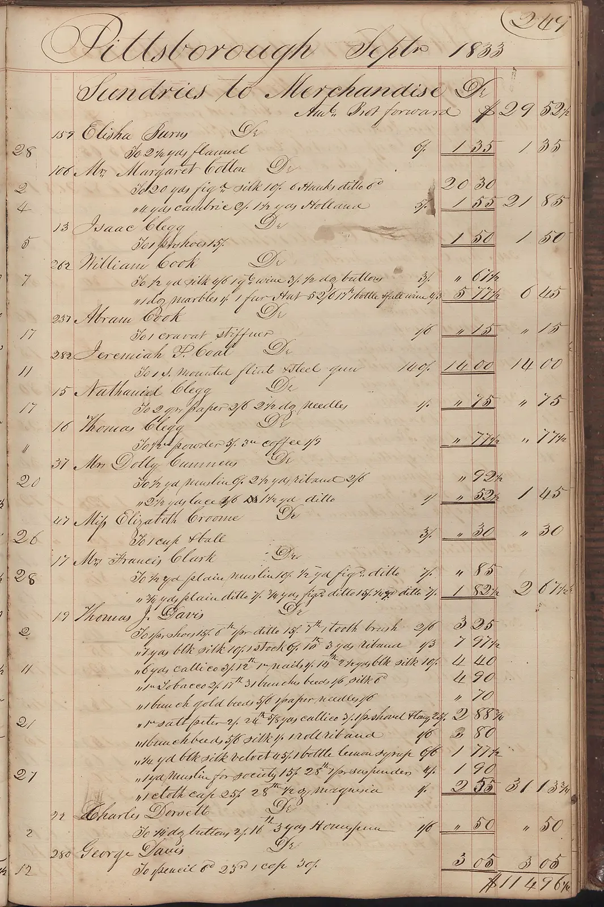
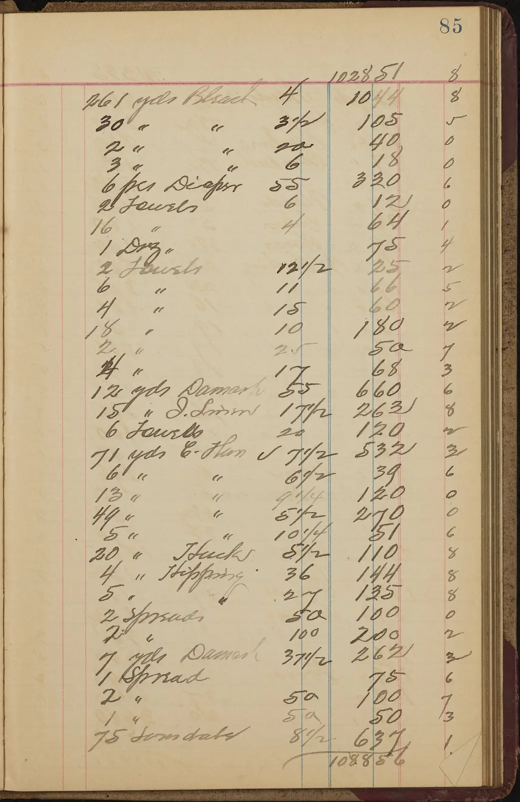

The Cost Ledger
Every item that changes when a BFF arrives, entered in one of three columns. Most of them turn out to be credits.
“Add the BFF later” is a real option, not a one-way door — provided the SPA is built so the token never escapes one module. The retrofit is 2–5 days of mostly‑deleting work.
The reason the ledger balances: the API's AddJwtBearer never changes. The BFF forwards a bearer token to it [2][3], so the one thing everybody fears rewriting is the one thing that isn't touched.
The genuine one-way doors are elsewhere: BFF-local endpoints that only ever spoke cookie [4], SignalR/WebSockets through the proxy [14], and access-token claims read in component code [22].
Chart of Accounts
The reversibility answer flips depending on which account you are posting to. Almost all of the internet's BFF-regret literature is filed under the second one. Don't import that regret into this decision.
A thin confidential-client host
Owns the OIDC flow, keeps tokens server-side, hands the browser an HttpOnly cookie, proxies /api/* to the real API with the access token re-attached [1][3]. It adds no business logic.
A per-client backend
Aggregates, trims and reshapes responses; business rules migrate into it [12]. Microsoft's own guidance: “Code duplication is a probable outcome”, and the pattern is unsuitable when “only one interface interacts with the backend”.
One-way door · logic gets strandedThe Ledger
Each line: what it is before (in-memory-token SPA), what it becomes after (BFF), and which column it lands in. A credit means you delete code — the retrofit's dividend, not its cost.
| Ref | Particularsbefore → after | Credityou delete it | Mechanicalhours, one file | Debitthe real bill |
|---|---|---|---|---|
| 01 |
Token acquisition
oidc-client-ts / react-oidc-context, silent renew, iframe plumbing→deleted; the BFF does code exchange back-channel [5]
|
−1 depship less JS | ||
| 02 |
Login / logout UX
signinRedirect(), callback route, silent-renew route→<a href="/bff/login"> [6]
|
−2 routescallback + silent renew | ||
| 03 | CORS Allowed origins, headers, preflight on the API→deleted. Same-origin by construction; a CORS error post-BFF means the topology is wrong [1][7] | −1 confignet negative cost | ||
| 04 |
File downloads & protected <img src>
Broken by design — <a> and <img> can't carry an Authorization header, so you're already writing blob/objectURL hacks [21]→just works, the cookie rides along
|
−1 hackthe retrofit deletes it | ||
| 05 |
API auth scheme
AddJwtBearer→AddJwtBearer. Unchanged. The BFF forwards the user's access token [2]; the token-handler pattern “requires minimal changes to existing web apps or microservices” [3]
|
0.00nil. this is why the “one-way door” framing is overstated | ||
| 06 | IdP client config Public client + PKCE, client auth off→confidential client + secret, client auth on, new redirect URIs [23] | minutesa toggle and two URIs | ||
| 07 |
HTTP client
Authorization: Bearer … interceptor→credentials: 'include' + a static X-CSRF: 1 header [2]. The new interceptor is strictly simpler than the old one [5]
|
1 fileif you own a fetch wrapper | ||
| 08 |
CSRF
Non-issue — bearer tokens aren't ambient→mandatory: SameSite cookie plus a custom header to force preflight [1]
|
1 headerin the same wrapper | ||
| 09 |
Who am I / claims
Decode the JWT client-side→GET /bff/user returns a claims array; one TanStack Query hook [24]
|
1 hookonly if claims are read in one place — see Folio IV | ||
| 10 | Session expiry Refresh fails → re-login→BFF API endpoints return 401, not a redirect — the SPA must handle it explicitly [7] | 1 branchone interceptor | ||
| 11 |
API base URL
https://api.example.com from env→/api relative, proxied
|
1 constannoying if absolute URLs are baked into feature code | ||
| 12 |
Deployment topology
Static SPA on a CDN + API→BFF host fronts the SPA; must be same-site — third-party cookies are dead in every major browser [25]. Plus a Vite dev proxy for /bff and /api [17]
|
+1 deployableingress rules; genuinely new work | ||
| 13 | Session store None→the cookie holds the tokens unless you enable server-side sessions; with >1 replica you need a shared store [8] and a shared Data Protection key ring [10][11] | the real taxbut the same tax greenfield or retrofit — so not an asymmetry at all | ||
| 14 |
SignalR / WebSockets
Bearer via accessTokenFactory, direct to the API→WebSocket handshakes can't set custom headers, so the BFF's anti-forgery check rejects them; reported falling back to long-polling [14]. Native support was still an open ask [15]
|
∞unbounded — cannot be totalled | ||
| Carried forward | 6 items OIDC lib, silent renew, callback routes, token storage, CORS, blob hacks. Net lines negative. | hours Not days — if centralised. Six entries, six single files. |
2–5 days + ∞ Ops build-out (paid whenever you adopt) + one item that cannot be priced. |
The one entry that cannot be totalled
SignalR / WebSockets is the single unbounded cost in this ledger. A WebSocket handshake cannot set a custom header, so the BFF's anti-forgery check — the very mechanism that makes the cookie safe — rejects it. Teams report the transport silently degrading to long-polling [14], and native hub support through the BFF remained an open feature request rather than a shipped capability [15].
Everything else on Folio II has a number next to it. This one has a shrug. If real-time is on the roadmap, decide about it now — either plan a direct-to-API bearer channel that bypasses the proxy, or price the workaround in before you commit.
Exceptions Noted
The optimistic claim — it's one HTTP-client file plus one ASP.NET auth block — is true for a disciplined codebase and false for a typical one. These are the unposted liabilities. Each one converts a mechanical entry into a debit.
/bff/user [24]. Decoding the access token is discouraged anyway: it is meant to be opaque to the client [22]. The #1 blast-radius multiplier.Standing Orders
To be observed from the first commit. Ten items. Every one is free — most are just good practice anyway.
Observe them and the retrofit is a 2–5 day, one-PR change instead of a rewrite.
One auth module
src/auth/ is the only directory that knows the word “token”. Nothing imports it except the HTTP client.
Never put the access token in app state
No Redux/Zustand/context slot for it. In-memory closure inside the auth module only.
No jwtDecode outside the auth module
Expose a typed useCurrentUser() returning { name, roles, … }. Its implementation decodes the ID token today; tomorrow it fetches /bff/user. Consumers never notice. Add an ESLint no-restricted-imports rule on jwt-decode.
You own the fetch wrapper
One apiClient file. TanStack Query calls it; components never call fetch directly. This is the file that swaps Authorization for credentials: 'include' + X-CSRF: 1 [2].
Keep the API bearer-only and client-agnostic
No cookie auth, no session, no CORS-origin assumptions leaking into handlers. The API must never learn that a browser is talking to it.
Handle 401 centrally
In the wrapper, as “session gone → go to login”. Don't distinguish “token expired” in feature code.
Deploy the SPA and API same-site from day one
app.example.com / api.example.com, or better example.com + example.com/api. Cross-site is now a dead end for cookies [25]; getting the origins right up front is free and removes the only genuinely structural retrofit blocker.
Test fixtures go through the auth module too
One loginAs(role) helper for E2E, one MSW auth handler. Don't hand-mint JWTs into localStorage across 40 spec files.
Decide about real-time now
If SignalR is on the roadmap, that's the one item a BFF makes materially harder [14] — either plan a direct-to-API bearer channel for it, or price the workaround in.
Errors that ring no bell
All three of these fail silently. None of them is expensive to fix — they are expensive to find, which is not the same thing, but bills the same hours.
Contra Account
Symmetry check. Is the BFF itself a one-way door?
“If you're a startup, skip it. If you're at scale, it's worth it.” / “We ended up with four different backends — the maintenance is painful.”
Statement of Account
| Path | Cost | What gets touched | Blast radius |
|---|---|---|---|
| BFF greenfield, now | 2–4 days | BFF host, OIDC config, YARP routes, /bff/user hook, deploy pipeline + shared key ring / session store [8][10]. Wiring a React SPA to it is <100 lines [24] |
New service, permanent |
| Retrofit later, standing orders followed |
2–5 days | apiClient.ts, auth/*, vite.config.ts, IdP client config, Program.cs, ingress. Net lines negative |
~6 files + 1 new project |
| Retrofit later, standing orders ignored |
2–4 weeks | Every jwtDecode call site, every ad-hoc fetch, every test fixture, plus the SignalR problem |
Whole app |
| Never (stay pure SPA) | 0 | — | — |
The gap between the two retrofit rows isn't the BFF. It's the discipline. A leaky SPA multiplies the same migration by roughly eight — and every one of the ten standing orders that prevents it costs nothing to adopt on day one.
The asymmetry is not between greenfield and retrofit. It's between a disciplined SPA and a leaky one.
The BFF decision is a two-way door [20]. The discipline decision is the one that's hard to reverse. Build the pure SPA now — and post the standing orders on the wall.

Ledger plates: 1833 Pittsborough merchant ledger & a millinery account book — Wikimedia Commons (DPLA).
Vouchers
Other folios
In-memory tokens vs cookie-backed BFF sessions under XSS
httpOnly cookies do not stop XSS — they convert silent token exfiltration into loud, tab-bound session riding.
Does the IETF browser-based-apps BCP apply to an internal admin console?
The BCP names “business applications” in its strongest recommendation — but it's a trade-off, not a normative MUST.
Refresh tokens and silent renew in a browser SPA (2026)
Iframe silent renew is dead cross-site but alive same-site; TanStack Query needs a single-flight mutex either way.
What a BFF costs you every day: OpenAPI codegen and the local dev loop
A path-preserving BFF leaves codegen essentially untouched — the daily cost is one extra process and a Vite proxy config.
BFF options in .NET 10: Duende.BFF, YARP, or hand-rolled
YARP + AddOpenIdConnect + the Apache-2.0 Duende.AccessTokenManagement (~250 LOC you own), or Duende.BFF if you qualify.
Pure React 19 SPA or a .NET 10 BFF? A decision framework for an internal admin console
Canonical page holds the full argument and citation ledger. · Atlas